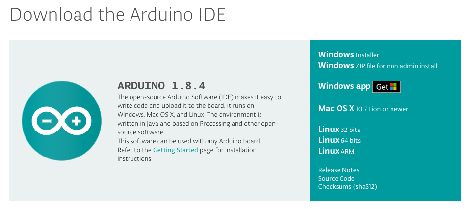

Introduction
Arduinoのインストール
M2Mゲートウェイの準備
Arduinoの基礎
Lチカ
デジタル入出力
アナログ入出力
ライブラリの使い方
シリアル通信(Serial)
I2C(Wire)
ADT74x0(温度センサー)
FIAPUploadAgent
Time
LocalTimeLib
NTP
SerialCLI(シリアルコンソール)
浮動小数点を文字列にする(dtostrf)
n秒ごとに実行する
移動平均を取る
IEEE1888(FIAP)
基本用語
M2Mゲートウェイからアップロード
解説 temp_upload
temp_uploadを拡張する
GitBookで公開
Arduinoのインストール
Arduinoのインストール
Arduinoを公式サイトからダウンロードする．
https://www.arduino.cc/en/Main/Software

インストーラーの指示に従ってインストールする
results matching "
"
No results matching "
"